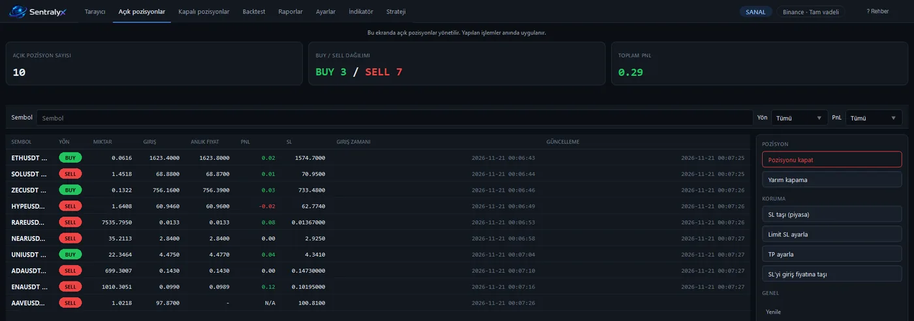

Принцип работы
Как работает Sentralyx — Что он делает и чего не делает
Sentralyx — это настольное торговое программное обеспечение, которое анализирует криптовалютные рынки, создает стратегии, проводит бэктесты и автоматизирует торговые процессы.
Когда правила выполнены, система действует
Цель — освободить пользователя от постоянного мониторинга графиков, связать процесс принятия решений с определенными правилами и обеспечить дисциплинированное применение одной и той же стратегии.
При возникновении подходящих условий он:
Sentralyx непрерывно сканирует рынок и проверяет условия стратегии, определенные пользователем.
- Выявляет торговые возможности
- Определяет уровни входа
- Рассчитывает уровни стоп-лосса
- Создает целевые уровни
- Защищает прибыль с помощью трейлинг-стопа и безубытка
- Отслеживает открытые позиции
- Отчитывается о результатах и торговой истории
В этом процессе пользователь может видеть, по каким правилам система ищет возможности для торговли и при каких условиях она не открывает сделки.

Что можно делать с Sentralyx?
Sentralyx — это настольное торговое программное обеспечение, разработанное для систематического анализа криптовалютных рынков, создания правил стратегий, тестирования на исторических данных и подключения торговых процессов к автоматизации.
Сканирование рынка
Отслеживает несколько криптовалют одновременно для поиска возможностей, соответствующих условиям стратегии.
Создание стратегии
Пользователи могут связать свою собственную торговую логику с определенными правилами. Цель — работать с определенными правилами вместо мгновенных эмоций или прогнозов.
Бэктест
Подготовленные стратегии можно протестировать на исторических рыночных данных.
Результаты бэктеста не гарантируют ту же производительность в будущем; они используются для анализа поведения стратегии при прошлых условиях.
Торговля и управление рисками
Торговые компоненты, такие как вход, стоп-лосс, цель и размер позиции, обрабатываются систематически.
Отслеживание открытых позиций
Открытые сделки отслеживаются и могут управляться в соответствии с определенными торговыми правилами.
Отчетность
Торговая история, результаты стратегий и данные о производительности могут быть проанализированы.
Не идея, а работающее приложение
Sentralyx — это не просто идея, сигнальная группа или теоретический проект. Это независимое настольное торговое программное обеспечение, активно разрабатываемое с реальными пользовательскими рабочими процессами.


Что Sentralyx не делает
Sentralyx:
- Не гарантирует прибыль
- Не утверждает, что точно предсказывает будущие цены
- Не предоставляет инвестиционные консультационные услуги
- Не обещает прибыль при любых рыночных условиях
- Не проводит безрисковую торговлю от имени пользователя
Как и в любой торговой стратегии, существует возможность убытка. Цель Sentralyx — не устранить риск, а сделать торговый процесс более систематическим, измеримым и основанным на правилах.
Контроль пользователя
Пользователь решает, какую стратегию использовать, на каких рынках работать и какие уровни риска принимать.
Sentralyx — это инструмент поддержки принятия решений и автоматизации; окончательная ответственность за торговлю лежит на пользователе.
Информация на этой странице предназначена для объяснения объема продукта; это не инвестиционный совет.
Связанные страницы
Проверьте стратегию в виртуальном режиме уже сегодня
Скачайте приложение, соберите стратегию и посмотрите, как она работает, без реальных денег.